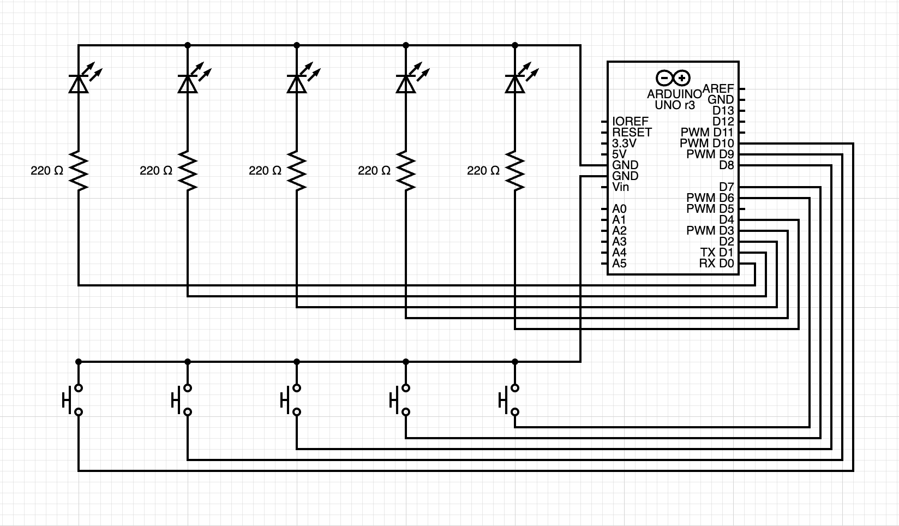
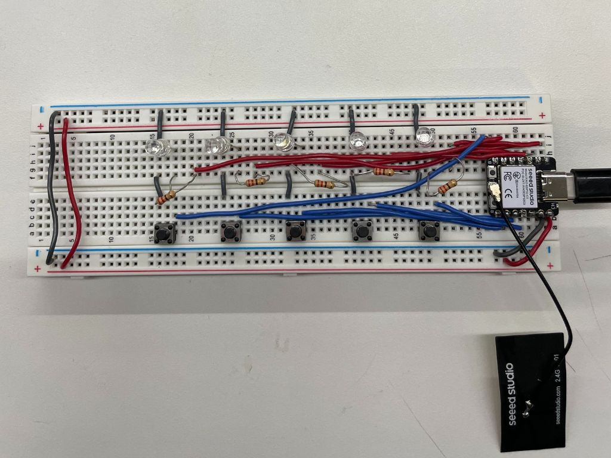

<div class="textcontainer">
<p class="margin"> </p>
<h3>Week 4: Microcontroller Programming</h3>
<p> For this week's project, we had to do something with an Arduino. I decided to make a memory game using LED's and buttons.</p>
<h4>The idea:</h4>
<p> An array of LED's light up in a random sequence. The user has to repeat this sequence by clicking the corresponing buttons.
If the user gets the sequence correct, another light is randomly added to the sequence. This goes on until the user either inputs the
incorrect sequence, or the user wins by correctly matching a sequence of X length.
</p>
<h4>Materials:</h4>
<ul>
<li>ESP32 XIAO</li>
<li>Breadboard</li>
<li>Wires</li>
<li>5 LEDs</li>
<li>5 Resistors (220Ω)</li>
<li>5 Buttons</li>
</ul>
<h4>The wiring:</h4>

<p class="margin"> </p>

<p>(Made using circuit-diagram.org. Note: the wiring should be adapted to your specific microcontroller. I personally used an ESP32 XIAO,
but that was not an available microcontroller on circuit-diagram.org.)
</p>
<h4>The code:</h4>
<p> After setting up the breadboard, it was time for me to start the code. </p>
<p> First, I started by thinking about how to store the pins and state infomation of the LED's and buttons.
I decided to make the following Pair class to store each LED-button pair. Each pair is declared by passing
in the corresponding LED and button pin numbers.
</p>
<pre><code class="language-cpp">
class Pair{
private:
int button_pin;
int led_pin;
int last_button_state;
int current_button_state;
int led_state;
public:
Pair(int button_pin_input, int led_pin_input){
button_pin = button_pin_input;
led_pin = led_pin_input;
led_state = LOW;
pinMode(button_pin, INPUT_PULLUP);
pinMode(led_pin, OUTPUT);
last_button_state = digitalRead(button_pin);
}
void resetLED(){
digitalWrite(led_pin, LOW);
}
void toggleLED(){
led_state = !led_state;
digitalWrite(led_pin, led_state);
}
void updateLEDFromButton(){
// LED on when button is pressed (LOW due to INPUT_PULLUP)
current_button_state = digitalRead(button_pin);
if (current_button_state == LOW){
digitalWrite(led_pin, HIGH);
} else {
digitalWrite(led_pin, LOW);
}
}
bool buttonPressed(){
current_button_state = digitalRead(button_pin);
if (last_button_state == HIGH && current_button_state == LOW){
last_button_state = current_button_state;
return true;
}
last_button_state = current_button_state;
return false;
}
};
// Initialize pair vector.
Pair pair_1(D6, D5);
Pair pair_2(D7, D4);
Pair pair_3(D8, D2);
Pair pair_4(D9, D1);
Pair pair_5(D10, D0);
vector<Pair> pair_list = {pair_1, pair_2, pair_3, pair_4, pair_5};
</code></pre>
<p> Next, I started working on the game loop logic. I started by setting up the following variables for the game.
These variables store the maximum length of a game, the current length of the game, and the LED sequence the
user has to memorize.
</p>
<pre><code class="language-cpp">
void loop() {
unsigned int max_game_length = 5; // max sequence length
unsigned int current_game_length = 0;
vector<int> led_sequence; // containes a sequence of pair #'s by index
Serial.println("Start Game!");
game_start_sequence();
</code></pre>
<p>Then, I implemented the code to add a random LED to the sequence and display the new sequence.
It randomly generates a number corresponding to the index of one of the LEDs in our LED-button pair list.
</p>
<pre><code class="language-cpp">
while (current_game_length < max_game_length){ // 9 -> 10
// GAME LOOP
// Add a random LED # to the sequence
led_sequence.push_back(random(5)); // [0,5)
current_game_length++;
Serial.println("Game Round " + String(led_sequence.size()));
// Make sure all lights are off from previous round
for (int i = 0; i < pair_list.size(); i++)
pair_list[i].resetLED();
delay(1000);
// Display the current LED sequence
for (int i = 0; i < led_sequence.size(); i++){
pair_list[led_sequence[i]].toggleLED();
delay(1000);
pair_list[led_sequence[i]].toggleLED();
delay(1000);
}
</code></pre>
<p>Afterwards, I added the logic to read the user's inputted LED sequence and update the game state.
If the user enters the incorrect sequence, the game enters its loss state. If the user enters
the correct sequence and it was the maximum sequence length, the game enters its win state. If the user
enters the correct sequence and it was not the maximum sequence length, the game continues.
</p>
<pre><code class="language-cpp">
// Read user inputted LED sequence
int user_count = 0;
while (user_count < led_sequence.size()){
// USER INPUT WHILE LOOP
for (int i = 0; i < pair_list.size(); i++){ // USER INPUT FOR LOOP
pair_list[i].updateLEDFromButton();
if (pair_list[i].buttonPressed()){ // BUTTON PRESSED
Serial.println("BUTTON " + String(i) + " CLICKED");
if (i != led_sequence[user_count]){
// USER INPUT INCORRECT
Serial.println("GAME OVER: YOU LOSE");
user_count = led_sequence.size() + 1; // break out of user input while loop
current_game_length = max_game_length + 1; // break out of game loop
game_lost_sequence();
break; // break out of user input for loop
} else { // DEBUG: else if?
// USER INPUT CORRECT
user_count++;
delay(300);
if (user_count >= max_game_length){
// USER WIN
Serial.println("YOU WIN");
game_win_sequence();
// DEBUG: other breaks should be handled already
break; // break out of user input for loop
}
break;
}
} // button pressed
} // user input for loop
delay(10);
} // user input while loop
</code></pre>
<p> I also implemented functions to display special LED sequences for different game states or stages of the game.
For example, if the user loses the game, one of the LEDs display an L in morse code. To see those LED sequences,
and other parts of the code (including headers), dowload the code below!
</p>
<p class="margin"> </p>
<h4>Code File:</h4>
<a href="led_game.ino" download="LED_memory_game.ino">LED Memory Game</a>
<p class="margin"> </p>
<h4>Game Demo:</h4>
<video controls width="650">
<source src="win_game_demo.mp4" type="video/mp4">
</video>
<p> Win game demo (restarts the game afterwards). For the sake of the demo, I've limited the maximum game length to 5 rounds. </p>
<video controls width="650">
<source src="lose_game_demo.mp4" type="video/mp4">
</video>
<p> Lose game demo (restarts the game afterwards). </p>
<h4>Reflections:</h4>
<p>Overall, the game was pretty fun to program. I learned that Arduino has functions like random() built-in and
that you can still import C++ libraries like <vector> onto microcontrollers. One note to self I would make is to
remember to turn off your LEDs to keep your patterns/state transitions clean.
</p>
</div>